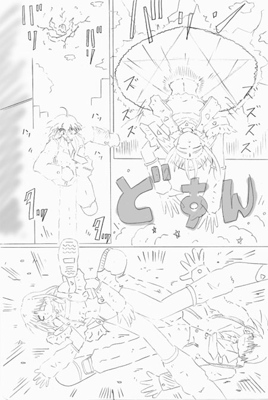
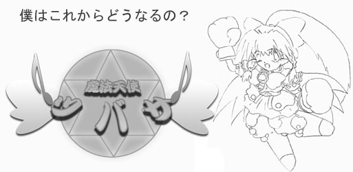
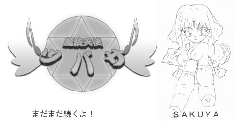
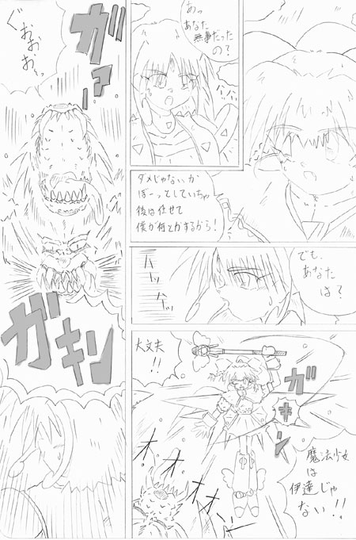
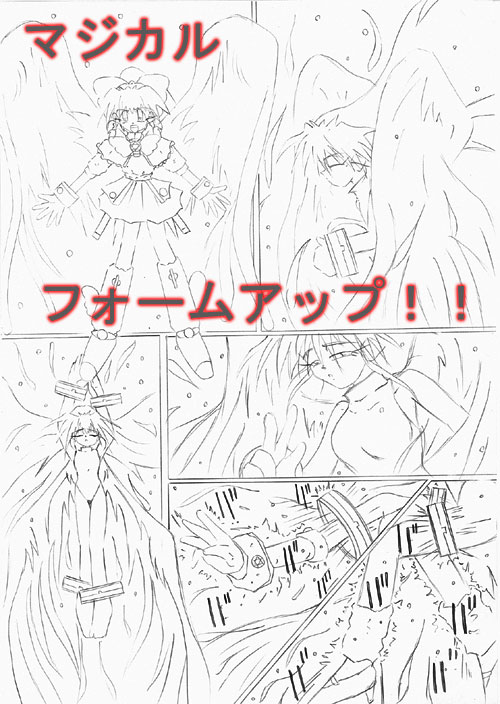
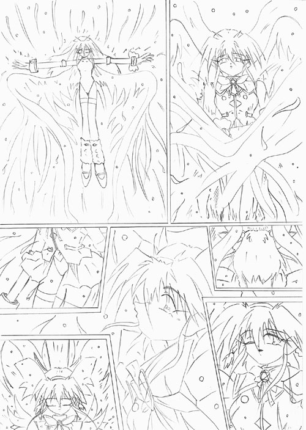
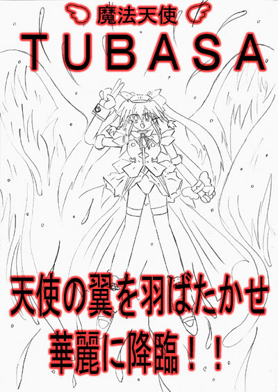
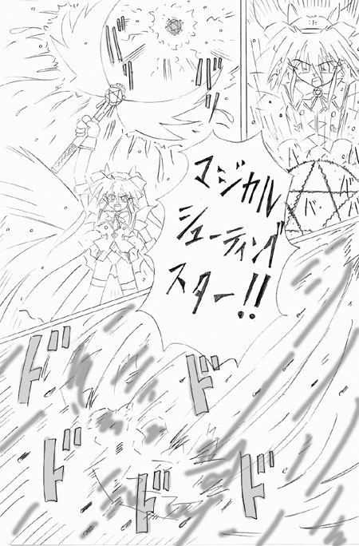
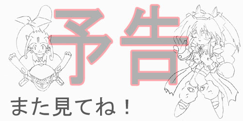

キーン コーン カーン コーン
チャイムが鳴り、しばらくすると、校舎からぞろぞろと生徒があふれ出てくる。
ここは都内某所の中学校。 みな、帰路につく者達である。 その中から一人、全速力で駆け出してくる少年の姿があった。 本編の主人公、『広井 翼』である。
（始まっちゃう、始まっちゃう、始まっちゃう！）
心の中でそう唱えながら、彼は決してスピードを緩めることなく、走りつづけていた。
彼が何故こんなにも急いでいるのかといえば、それは、彼の愛してやまないＴＶアニメ、『魔法の剣士 スラッシャー鈴』の放映時間が迫ってきているからである。
『魔法の剣士 スラッシャー鈴』 もとはといえば『ＴＳストーリーランド』という番組の中で劇中劇として放送されたものであるが、『ＴＳストーリーランド』のヒロインキャラクター『北条 鈴』の人気の高さもあり、一本の作品として作り直されたものである。
翼はこのアニメを一目見たときから大好きになっていた。 翼は元々、魔法少女が好きだったがこのアニメに出会った時の衝撃は忘れられない。 画面中所狭しと飛び回る鈴やその仲間達。 魔法少女といいながら、いざとなると魔法を使わず刀を振り回し大暴れする鈴、どれをとっても今まで見た事の無い楽しさに溢れていた。
毎回欠かさず録画を続けていたが、今日は朝寝坊してしまったためにビデオの予約を忘れてきてしまっていた。

必死に走る翼、時計に目をやるが、このままでは間に合いそうに無い。 あれこれ迷った末に、いつもは通る事の無い裏路地を抜けていく事にした。 夕方、人気も無くなんとなく怖い道なのであるが、近道ではあるため背に腹は代えられない。
裏路地を抜ければ、すぐに自分の家だ。 何とか間に合いそうだと、スピードを緩めた瞬間、いきなり頭上から何かが落ちてきた。 どさっ！ ものの見事に押しつぶされる翼。
「むぎゅう」
情けない声とともに翼は気を失った。
 『飛ぶのは読み終えてからね♪ ｂｙ ＴＵＢＡＳＡ』       幸せの歌（エンディングテーマ） 作詞：ＢＡＦ 作曲＆編曲：募集中 歌：ＴＵＢＡＳＡ 見つめ合った瞬間 運命感じた 多分それは うれしいときめき あこがれは心に翼をくれる どこまでも飛んでいけそう あなたがそばに居てくれたなら きっと願いがかなうはず 大空に響け優しい歌 天まで届けこの声とともに 安らぎ 愛 幸せ 世界中に溢れ出しますように --------------------------------------------------------------------------- ————————————————————————————————————— このお話はインクエストメンバーの皆さん、徳則さん、ＭＯＮＤＯさん（五十音順）の提供でお送りいたしました。  どうも！ ＢＡＦです。 『魔法天使ツバサ』いかがだったでしょうか？ 読んでくだされば判ると思いますが、昔ジャンプに掲載されていた漫画が元ネタとなっております。 今回はＢＡＦさんの新作小説の挿し絵を描かせていただきました。
※匿名・仮名で構いません。
どれくらい経っただろう、翼は背中の上に何かの重みを感じて目を覚ました。
「痛た、た、た」
体を起こしながら上に載っているものを確かめる翼、するとそこには、ビキニのような物だけを着けた、ほとんど裸同然の女の子が気を失って倒れていた。
「うわー！」
慌てて飛び起きる翼。 女の子の下から這い出たが、その女の子は一向に目を覚ます気配は無い。 顔を近づけてみるが、どうやら息はしているようだ。
「よかった。 でもこれからどうしよう？」
胸を撫で下ろし、あたりを見回すが人通りは全く無い。 どうしようかと迷うがこのままにしていくわけにもいかない。 色々考えた末、とりあえず家に連れていく事にした。 回りに散らばるものをかき集め、女の子を背負うと一目散に自分の家に向かった。
幸い、誰にも見つかる事無く家に辿り着く事ができた。 とりあえず母に見つからぬよう台所に向かい『ただいま』の挨拶だけして、自分の部屋に逃げ込む。 部屋の戸に鍵をかけ、自分のベッドに女の子を寝かせ、椅子に座り一息つき、時計を見るともうとっくに放映時間を過ぎていた。 はあっ、自然にため息が出る。 確かにＴＶも気になるがこの女の子も気になる。 少し待ってみたが一向に目を覚ます兆しは無い、身元が判るものは無いかとあたりを見回すと夢中でかき集めてきたものの中に見慣れないピンクのノートがあることに気付いた。
手にとってパラパラとめくってみるが、全くの白紙であった。 ひっくり返し裏を見ようとしたとき、ぽとっ、と何かが床に落ちた。 なんだろう？と見てみると、それはちょっと変わった形だが、ペンのようである。
翼はペンとノートを交互に眺めていたら、無性に絵が描きたくなってきた。 翼は絵を描くのがとても上手い。 学校では何度も賞をとっている。
ただ、誰にも秘密だが、家に帰れば魔法少女のデザインばかり描いている。 翼自身、将来は『魔法の剣士 スラッシャー鈴』のような作品を創る、アニメーターか漫画家になるのが夢だったりする。 この可愛いピンクのノートに魔法少女を描いたら、どんなに映えるだろう、それを考えると居ても立ってもいられない。
「ごめんなさい、ちゃんと買って返します」
寝ている女の子に手を合わせ一礼すると、ものすごい勢いでペンを走らせつづけた。
いつか自分の手で作り上げたいと思っている魔法少女の設定をノートの上で形にしていく。
十ページにも渡る大作を書き終え一息つく。
「ふう、変身呪文はマジカルチェンジと。 これで最後かな？ たくさん描いちゃったな。 こんな魔法少女が近くにいてくれたら良いのにな」
そういうと立ち上がり、
「こんな風に、ポーズ決めてマジカルチェンジとか言っちゃったりしてさ」
と、翼が、今書いたばかりの変身呪文を唱えた瞬間、体が光り出し、同時に激痛がつばさを襲った。
「うわー」
翼は痛みのため立っている事ができずしゃがみこんでしまう。
体押し潰されるような感覚があり、手足が縮んでいく。
耐え切れず気を失ってしまうが、それでも変化は続いていく。
髪の毛も、肩甲骨辺りまで伸びると、まるで見えない手に持ち上げられたかの様に束ねられ、ポニーテールにされ、羽根の形の髪留めが現れ固定される。
それに伴い、着ていた学生服にも変化が現れる、先ず青く染まっていき袖が無くなりベストのようなものに変化していく、それと同時にワイシャツにレースのようなものが現れブラウスに変わっていく。
胸元に羽根の付いたマイクといった感じのペンダントが現れる。
ズボンにも変化が現れ、上下にちぎれると上のほうはトランクスと同化して女の子用の下着に変わっていき、下は靴下と同化していき膝下ぐらいまでのブーツに変化を遂げていった。
腰の辺りからオーロラのような光が広がりスカートを形成していく。
全ての変化が終わった時、もうそこには以前の翼の姿は無く、いかにも魔法少女といった感じの派手なカラーリングのコスチュームに身を包んだ、小学生ぐらいの少女が倒れているだけであった。
『ＴＳ界２１世紀初頭、インクエスト悪巧み！
サウンドノベルをつくろう！
あれがしたい、これも見たい
あなたの妄想が、プロジェクトを構築します！
詳しくはhttp://www.wisnet.ne.jp/~inquest/project/index.html まで！』
萌える心を胸に抱き〜 我らは集う学舎に〜♪
春といえば 入学シーズン。
ちょっと難しめな試験を乗り越えれば そこは楽しいキャンパスライフ。
あなたも ＴＳ知識を磨いてチャレンジしませんか？
ただいま 新入学生受付中です。（体験入学制度もあります、お気軽にお越しくださいね。）
http://ts-u-ac.wisnet.ne.jp/
TS TS TS TS 我らの魂入れ替わる ああ〜 TS大学〜♪
『ロボＴＲＹ美少女っ』シリーズで活躍する、ＴＸ−４４が今、君の手にっ。
完全可動！ アーマー脱着！
ブースターセットと組み合わせ、君だけのオリジナルメガパペットを生み出せっ。
バトルメガパペットシリーズ・ＴＸ−４４。
『さおりんバージョン』『こーすけバージョン』二体同時発売っ！
……三段変形『バンガイオーＲＶ３』もすごいぞっ
「えーん、えーん、たすけてー」
「よーし、女美川マンにへんしんだっ」
ちゃらりらりっ——。
「女美川むきむき女美川むきむき女美川むきむき女美川むきむき……
はっはっは〜っ」
「すんませ〜んっ」
……………………………………………………………………………………
「元に戻らないのでああああ〜るっ！」
「知らんっ」
……なんのＣＭだっ（笑）。
というわけで、『ロボＴＲＹ美少女っ』シリーズはこちら
http://www14.big.or.jp/~yays/library/novel/robot_triathlon/title.htm
「起きて、起きて下さい！」
誰かに、体を揺すられている感覚に、つばさの意識が覚醒する。
はっ、と我に返り飛び起きると、先ほどベッドに寝かせていた女の子が、心配そうな顔でつばさを見つめていた。
「あっ、気が付いたんだね。 良かった。 君は体、大丈夫？」
自分の事は棚に上げ、女の子に問い掛けるつばさ。
「ええ、私は大丈夫です。 それよりも、お嬢ちゃんの方こそ大丈夫？」
「えっ、お嬢ちゃん？ 僕はれっきとした男だよ。 僕のどこがお嬢ちゃんなのさ？」
 つばさは立ち上がり、両手を広げて女の子の前に立つ。 そして、自分の体を見下ろした時、つばさは信じられないものを発見した。 今まで学生服を着ていたはずなのに、全然、服が違う、そればかりか下半身にはいかにも子供用といった感じのひらひらのスカートが揺れている。
つばさは立ち上がり、両手を広げて女の子の前に立つ。 そして、自分の体を見下ろした時、つばさは信じられないものを発見した。 今まで学生服を着ていたはずなのに、全然、服が違う、そればかりか下半身にはいかにも子供用といった感じのひらひらのスカートが揺れている。
「ええー、なんでー」
つばさは驚いて、スカートを押さえる。 すると、いつも触れるはずのモノの感触が無い。
ペタペタと何度も股間を手で確認するが結果は同じである。 つばさの顔がだんだん青ざめていく。
「うそだ！」
つばさは慌てて机に向かうと、鏡を覗き込んだ。 するとそこにはちょっと困ったような表情の１１，２歳の少女だけが映っていた。
へなへなとその場に崩れるつばさ。
「あのー、どうかしたんですか？」
放心状態のまま声のしたほうを向く翼、するとそこには先ほどの女の子が不思議そうにつばさを見ている。
その女の子の姿を見た瞬間、つばさの頭の中に閃くものがあった。
（今の僕の姿って確か・・・！）
辺りを見回し、目的のものを探す。
（あった！）
慌てて駆け寄ると、そこにあったピンクのノートを拾い上げ、開いてみた。
鏡に映る自分と、さっき自分の描いたイラストを見比べてみる。
（やっぱり！）
そう、そこには今のつばさの姿そっくりな魔法少女の絵が描かれていたのだった。
力が抜け、するりとつばさの手からノート落ちる。 そのノートを見て女の子が叫びを上げる。
「ああ！ そ、それは」
ノートに駆け寄り、抱きしめるように拾い上げる。
パラパラとノートをめくり、中を確認するが、そこに描かれているものを見て愕然とする。
「あなた、このノート使ってしまったの？」
女の子がつばさを睨み付け、そう問い質す。
「やっぱり、そのノート何か秘密があるんだね？ 一体何なのさ、僕をこんな姿に変えるなんて？」
問い掛けられ、確信を得たつばさは女の子に質問を返す。
「そう、知らないで使ってしまったの。 いいわ、教えてあげるこのノートの事。 その前に自己紹介をするわね。 私の名前は、サクヤ。 この世界とは違う魔法次元といわれる所からやってきたの」
「ええ！ なんだって」
「本当の事よ。 私達の世界は今、悪の魔女リメーラによって支配されてしまっているわ。 リメーラは私達の魔法では絶対に倒せない。 だから、この世界に助けを求めるため、私がやってきたの」
「で、でも。 この世界には魔法なんて使える人いないよ」
「ううん、リメーラを倒せるのは魔法の力じゃないの。 でも、魔法の力が無ければ簡単に倒されてしまう。 だから魔法次元の人たち皆で魔法力を注ぎ込んで、このノートを創ったの。 このノートは『マジカルノート』といって、そこに書かれた願いを実現させてしまう。 このノートとこの世界の人の力があればリメーラを倒せるかもしれない」
「この世界の人の力って？」
「それは・・・」
サクヤがその問いに答えようとした瞬間、
『がしゃん！』
という盛大な音を立て、部屋の窓ガラスを割り、何かが部屋に飛び込んできた。
つばさは驚きながらも飛び込んできたものを確認する。
それは、今までつばさがみた事の無いような化け物であった。 例えるなら人体標本のような赤と白の筋肉組織を剥き出しにした狼男といった感じだろうか。
「飛ぶわよ！」
サクヤはそう言うとつばさを担ぎ上げ、飛び込んできた衝撃から体制を立て直そうとしている狼男の横をすり抜け、破片の飛び散る窓から飛び出す。
「うわー、落ちる」
いきなり、二階の窓から飛び出したのだからつばさが慌てるのも無理は無い。
しかし、結果から言えば地面にたたきつけられる事は無く、飛び出したときの勢いそのままに飛びつづけていたるのだった。
「ど、どうなってるんだよー」
「言ったでしょ、私達には魔法の力があるの。 今はこれが限界だけどね」
優しく語り掛けるサクヤであったが、その声の中に震えがあったことに、つばさは気付いた。
「一体さっきのは何？」
「多分、私とこのノートを狙ってきたリメーラの刺客よ」
「刺客だって？」
何か嫌な予感がして恐る恐る後ろを見るつばさ。 すると猛スピードでさっきの狼男が迫ってきていた。
「うわーーー」
翼が悲鳴をあげる。
一気に二人を追い抜く狼男。 そのときの風圧で弾き飛ばされる二人。 サクヤがつばさを支えきれず手を離してしまう。
「ああーーー」
落下していくつばさ。
（このままじゃ、死んじゃうっ！）
そう思った瞬間、いきなり落下が止まった。
「えっ！」
辺りを見回すが、まだ空の上だ。 何かに引っかかって止まったわけではない。
何が起きたか判らずに、回りを見回して見ると、背中で何か輝くものがある。
（そういえば！）
つばさはノートに、魔法少女に変身すると空が飛べるようになると書いた事を思い出した。
（すごい！ 本当に、現実になっちゃうんだ。）
すぐに飛び方のコツも判った、念じるだけで、飛び回ることができる。
「よおーしっ、これなら！」
そう言うと、つばさは、さっきサクヤとはぐれた場所まで飛び上がっていった。
その頃、はるか上空では、サクヤと狼男の睨み合いが続いていた。
結局、焦れて先に動いたのは狼男の方であった。
しかし、サクヤは動かない。 いや、動けないのだ。 魔法の力のほとんどを時空跳躍に使ってしまい、今は浮いているのがやっとというところであった。
狼男の口が大きく開かれ、サクヤの首筋に迫る。 目を硬くつぶり死を覚悟するサクヤ。
だが、いくら待ってみても痛みが、そして、死の瞬間が襲ってこない。 恐る恐る目を開けるサクヤ。 するとそこには、バトンのようなもので狼男の牙を食い止めるつばさの姿があった。
「あ、あなた無事だったの？」
「ダメじゃないかぼーっとしていちゃ。 後は任せて僕が何とかするから」
サクヤの疑問には答えず、さがる事を促すつばさ。
「でも、あなたは？」
「大丈夫！ 魔法少女は伊達じゃない！！」
つばさは少し微笑みながらそう言い放ち、バトンを力いっぱい振り払う。
たまらず仰け反る狼男。 つばさはバトンをブンブンと振り回し追い討ちをかけるのだが、見事にかわされ逆に捕まってしまう。
「うわーーー」
必死にバトンを振り回すが、力もリーチも足り無さすぎる。 掠りもしないし、例え当たったところでこの狼男は微動だにしないだろう。
そんな事をしているうちに、狼男がつばさの体を、ぐいぐいと締め上げていく。
「く、苦しい」
あまりの痛みに気を失いかけた瞬間、いきなり横方向に突き飛ばされる。 くるくると回転するつばさ。 何とか体制を立て直して、何が起こったか確かめようと辺りを見渡せば、つばさの代わりにサクヤが狼男に捕まっていた。 つばさに体当たりをして助けてくれたらしい。 苦しげな表情したサクヤがつばさを睨み付ける。
「何をやっているの？ 何が『魔法少女は伊達じゃない！！』よ！ 全然弱いじゃない！」
「しょうがないだろ！ 攻撃が届かないんだから！」
「子供のくせに、無茶するからそういう事になるのよ！」
「『子供のくせに』って・・・。 それだ！！」
つばさは、何か閃いたようだ。 いきなりの叫びに驚くサクヤ。 しかし、つばさはそんな事お構いなしに手元を見やる。 するとそこには腕時計のようなものがあり、何か光が点滅している。
「よし！ １５分経ってる。 サクヤさん、僕の本当の力見せてあげるよ！」
そう言うとつばさは、サクヤと狼男を見やり、
「マジカルフォームアップ！！」
と叫んだ。
叫んだ瞬間、つばさがものすごい光を放つ。 その光の中、つばさの着ていた衣装が、光の粒子になって消えていく。 それと同時に、髪の毛も解かれて扇状に広がっていく。
腕や、足、それから胴がすらりと長く伸び、胸や尻が、大きくボリュームを増していく。
次に、つばさの体は虹色の光に覆われ、その光が青いレオタード状の衣装に形を変えていく。
手にはレースの手袋、足にはタイツとハイヒールが現れる。
それに伴い、髪の毛も腰辺りまで伸び、ツインテールに結び直され、リボンで結ばれる。
最後に瞼に薄くアイシャドウ、唇にはピンクのルージュが引かれる。
これだけの事がサクヤと狼男の目の前で一瞬で起こった。
あっけにとられるサクヤをよそに、ＴＵＢＡＳＡは腰に手を当て決めポーズをとった。 ポーズと同時に背中から大きな翼が広がっていく。
「どうだい、サクヤ！ これから俺の本当の力を見せてやるぜ！！」
そう言うとＴＵＢＡＳＡは狼男に向かい飛び出していく。 ＴＵＢＡＳＡの手の中にバトンが現れる。
だが、狼男はサクヤを手前に突き出し、己の盾とした。
バトンを振りかざしたまま動きの止まるＴＵＢＡＳＡ。 狼男はその隙を見逃さず、口から炎を吐く。
何とかそれをかわす、ＴＵＢＡＳＡだったが人質がいる以上、手が出せない。
手の出し様が無く躊躇するＴＵＢＡＳＡにサクヤが声をかける。
「歌を・・・。 もし、歌というものを知っているなら、歌を歌って！ 魔法次元の者は歌に弱いわ」
「歌だって？ 判った！」
ＴＵＢＡＳＡは半信半疑であったが、バトンをマイクに変化させ、最近流行りの歌を歌いだした。 元々、今の姿は魔法のアイドルとして設定したものだったので、歌は上手いし、それなりの装備もある。

空中に美しい声が響き渡る。 しかし、その美しさに反比例して、狼男とサクヤが苦しみだす。
サクヤまで苦しむのを見て、歌を止めるＴＵＢＡＳＡ。
「何をしているの？ もっと歌を！」
「でも、君まで苦しんでる！」
「私の事はいいから。 早く！！」
サクヤが苦しんでしまうというのに、歌う事などできない。 しかし、躊躇していれば、サクヤが殺されてしまう。 激しいジレンマの中で、ＴＵＢＡＳＡは、とんでもない事を思いつく。
「サクヤ。 ノートをこっちへ！」
ＴＵＢＡＳＡが叫んだ。
狼男に締め上げられ朦朧とするサクヤであったが何とかノートを取り出し、ＴＵＢＡＳＡに向かい投げる。
ＴＵＢＡＳＡはそれを受け取るとなにやら書き込んだ。
「サクヤ、『マジカルモンガー』と叫ぶんだ！」
「マジカルモンガ−！」
気を失いかけながらも何とか叫びを上げるサクヤ。
すると、煙がサクヤを包み込み、サクヤの姿を消してしまった。 いや、消したわけではなかった。 サクヤが消えた場所に一匹の小さな動物が浮いている。 どうやら、モモンガのようである。
「え、え、え、どうなっちゃったの？」
サクヤの声でモモンガが混乱したようにしゃべりだす。
「歌の影響を受けないように変身してもらったんだ。 敵を倒したら元に戻すから」
そういうとＴＵＢＡＳＡは、マイクを持ち直し、歌い始める。 苦しみながらも狂ったように攻撃を仕掛ける狼男だが、ＴＵＢＡＳＡはその攻撃を難なくかわしながら歌い続ける。 いきなり狼男の動きが止まり、狼男から何かが分離する。 とたんに狼男の形が崩れ、背広を着た中年男性に姿が変わっていく。 気を失ったまま落下していく、中年男性。 ＴＵＢＡＳＡが助けようとするが、モモンガに身を変えたサクヤがいち早く男性を捕まえた。
「この人は私が何とかするから。 奴を倒して」
そう言ったサクヤの指差したほうを見ると、さっき男性から分離したモノがだんだん形を成して行く、こうもりの羽と鳥のようなくちばしを持った小人。 それはちょうど、ヨーロッパの建築物に見られる、ガーゴイルと呼ばれるものに似ていた。 そして、その小人がどこかへ飛び去ろうとしていた。
「逃がすか！」
ＴＵＢＡＳＡはそう言うと、バトンを小人の方に向ける。
「マジカルシューティングスター！」
言葉と同時に、星型の光が無数に放たれ小人の体を貫いていく。
光の渦に巻き込まれ小人は完全に消滅した。
「どうやら終わったな。」
ＴＵＢＡＳＡはそう言うと、サクヤ達のもとに向かうために下降をはじめた。
サクヤ達は、もう人気の無くなった公園に降りていた。
サクヤに近づいていくＴＵＢＡＳＡ。
ＴＵＢＡＳＡがやって来たことに気付いた、サクヤが、
「早くもとに戻して！」
と声をかけてきた。
ＴＵＢＡＳＡは頷き、ノートを取り出すと、サクヤの変身解除の呪文を書き込もうとした。
ところが、何か黒い塊がＴＵＢＡＳＡの目の前を勢いよくすり抜けていく。 とっさにノートを庇うが、ペンを掠め取られてしまった。
慌てて追おうとしたが、その黒い塊はいきなり空中で姿が見えなくなってしまった。
後には、途方にくれる魔法少女とモモンガ。 そして、気絶したままの中年男性だけが残されていた。
続く
次回予告
サクヤ ： キャー！ どうするのよ？ 私、元の姿に戻れない！！
翼 ： ホント困ったね
サクヤ ： んっ！ あんただけ何で元の姿なの？
翼 ： 僕？ 僕はちゃんと最初から変身解除の呪文書いておいたもの
サクヤ ： そんな〜
翼 ： でも、次回は僕にも不幸が起きるんだ。 実は僕らが助けたおじさんに僕の変身解除見られてしまったんだけど、このおじさん芸能プロデュ−サーで正体をばらされたくなかったらアイドルデビューしろ！って言うんだ。 僕、どうしたらいいんだろう？
サクヤ ： なんか不幸の度合いが違いすぎる気がする
翼 ： 新しい敵もやってくるし、母さんに動物は飼ってはいけないとか怒られるし・・・。
サクヤ ： そうそう・・・、って！ 動物って私のこと！？
翼 ： ・・・・・・
ＴＵＢＡＳＡ ： というわけで次回、『ＴＵＢＡＳＡ アイドルデビュー！？』も必ず読んでね！
サクヤ ： 全然、『というわけ』じゃな〜い！！（フェードアウト）
チャン チャン
—————————————————————————————————————
メイキング オブ 魔法天使ツバサ
ずっと以前その漫画を見たときから、こんな話作れないかな？と考えていたのですが、『少年少女文庫にとって永遠のテーマ（のひとつ）といえる魔法少女物』というコメントを目にしまして、それならば長年の思いを成就させてもいいかなと思い、こんなもの書いてみたのですが、いかがだったでしょうか？
今回は出来るだけアニメ風にしようと思い色々な方にご協力願いました。企画当初からお世話になりっぱなしの角さん＆北房真庭さん、そしてＣＭコメントをくださったインクエストメンバーの皆さん、徳則さん、ＭＯＮＤＯさん本当にありがとうございました。
もし面白かったと少しでも思ってくださったら、一行でもいいですから感想をください。お願いします。 それではまた
まほー少女モノっと言うことで色々それらしく見せるのに苦労しました。
その為に、絵待ちで掲載を遅らせてしまいました。
関係各所の皆さん、ＢＡＦさん、待たせてしまってすいませんでした。
それから、いつも隣で励まして（？）くれた相方の、北房真庭に感謝しております。
（角さん）
原案協力と冠をつけられていますが、あまりたいした事をやってないと思います。
やったと言えば相方の隣でぐちぐち言ってただけなので・・・・・
何はともあれ、相方の絵が完成して良かった。
まだ第一話と言う事なので、続きは何かネタがあったらを出したい思っております。
（北房 真庭）
※書き込み後は、ブラウザの「戻る」ボタンで戻って下さい。